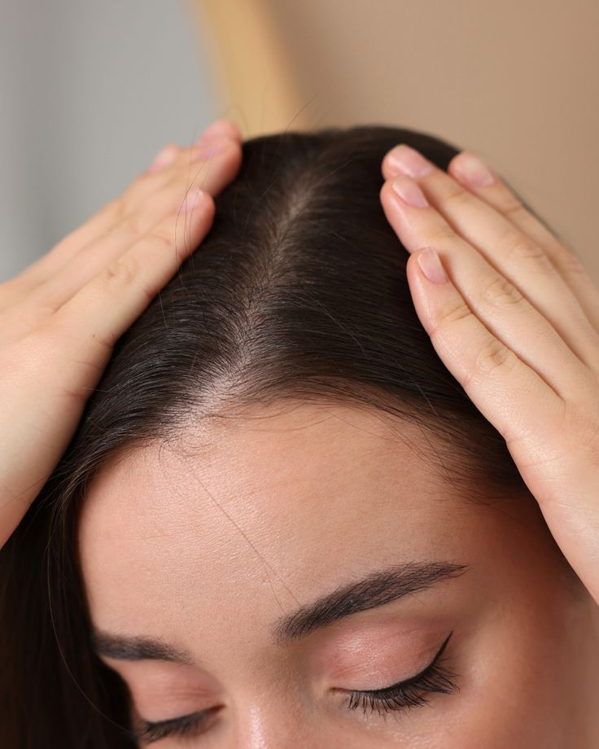

Dandruff
Dandruff is a common scalp condition that causes flakes and itching.
Causes
- Dry scalp (جفاف فروة الرأس)
- Oily scalp and excess sebum
- Fungal infection (Malassezia)
- Not washing hair regularly
- Using harsh shampoos or products
- Sensitivity to hair care products
- Stress and hormonal changes
Treatment
- Using anti-dandruff shampoo regularly
- Keeping scalp clean and balanced
- Avoiding harsh hair products
- Massaging scalp to improve circulation
- Treating fungal infections if present
- Maintaining a healthy diet (zinc, vitamins)
- Reducing stress levels
Best Oils
- Tea tree oil → fights fungus and reduces dandruff
- Coconut oil → moisturizes scalp and reduces dryness
- Jojoba oil → balances scalp oil production
- Olive oil → softens scalp and reduces flakes
Warnings
- Avoid scratching the scalp too much
- Do not use harsh shampoos daily
- Avoid hot water when washing hair
- Do not ignore persistent dandruff
- Avoid heavy oil buildup on scalp
- Don’t use too many styling products
th="300">
After treatment
Back